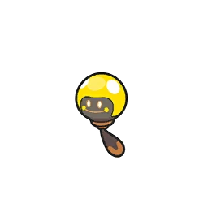
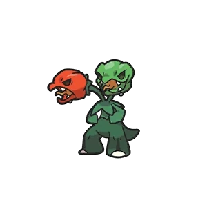

En los nuevos juegos de Pokémon hay distintos pokémon que evolucionan mediante el uso de objetos:
Tadbulb
Este pokémon fue introducido en la 9ª generación y es de los más característicos ya que su evolución es el pokémon insignia de la líder de gimnasio E-Nigma.
Bellibolt
| Pokémon | Requisito | Evolución |
|---|---|---|
|  | == Uso de Piedra Trueno ==> |
Capsakid
Capsakid evoluciona a Scovillain al alcanzar el nivel 30 y darle una piedra fuego
Scovillain
| Pokémon | Requisito | Evolución |
|---|---|---|
| == NV30 + Piedra Fuego ==> |  |
Cetoddle
Cetoddle evoluciona a Cetitan al darle una piedra hielo
Cetitan
| Pokémon | Requisito | Evolución |
|---|---|---|
| == Piedra Hielo ==> |